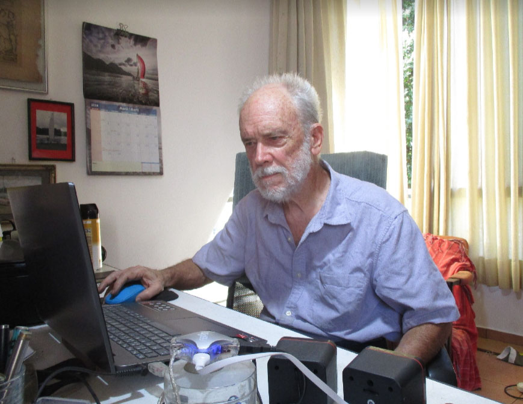

Abro este site com uma intenção: a de apresentar, receber e discutir ideias e propostas relativas à tecnologia e arte da embalagem. O nome do site encadeia embalar, arte e técnica em uma postura baseada na experiência, ou experiências dos participantes, sempre valiosas. Tratamos, essencialmente, de experiências técnicas, mas sabemos que estas se ligam (tudo se liga a tudo) a questões econômicas, sociais e ambientais. Há, portanto, um campo enorme de atividade na área de embalagem.

Tenho mais experiência com embalagens logísticas, mas incursões nas embalagens de venda. Como detalho no texto de minhas publicações, embalagem é uma interface entre o produto e o ambiente de distribuição. Este se divide em dois campos, o da distribuição física e o da distribuição social. O primeiro trata de problemas de movimentação, armazenamento e transporte, com suas complexidades e interseções. O segundo trata de aspectos político / legais, econômicos e sociais, sendo ainda mais complexo, tendo especialistas em cada aspecto.
Minha experiência vem de uma atuação profissional, primeiro como engenheiro naval, no projeto e construção de barcos de plástico reforçado (entre os quais o veleiro que tenho na Guarapiranga) e de navios de aço. Em 1973 entrei no IPT (Instituto de Pesquisas Tecnológicas do Estado de São Paulo), onde fiquei encarregado de um novo laboratório, de embalagens. Fiz o mestrado em engenharia de embalagens na Michigan State University e iniciei o doutorado, mas tive que voltar ao IPT.
Atuei no IPT de 1973 até 2006, quando me aposentei e passei a atuar como perito de reguladoras de sinistro, analisando ocorrências de perdas e danos que envolvem embalagem, acondicionamento e estiva de cargas. Trabalhei, também, como consultor da ONU (United Nations Industrial Development Organization, em Viena, e International Trade Center, em Genebra) e da OEA (em Washington) com missões no México, Guatemala, Cuba, Peru, Nicarágua, Moçambique, Uganda, Indonésia e Tailândia, que me agregaram boa experiência técnica e humana.
Apresento, aqui, como contribuição inicial, uma publicação que é um desenvolvimento de publicação do IPT, Embalagem de Distribuição Física e Exportação, de 2006.
Gostaria, então, como começo de conversa, de receber críticas e sugestões quanto à publicação anexa. Mas o site é aberto a quaisquer questões relativas à arte e tecnologia da embalagem, seus impactos econômicos, sociais e ambientais. Hoje, quando muito se fala em Governança Socio–Ambiental (ESG), há análises importantes a serem feitas, mal cobertas pela publicação.
Sei que minha experiência é cheia de erros, acertos e propostas, portanto altamente discutível.
Não hesite em me contatar para conversarmos: